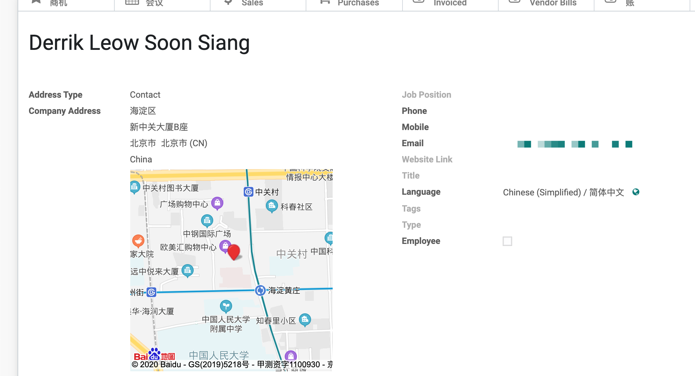
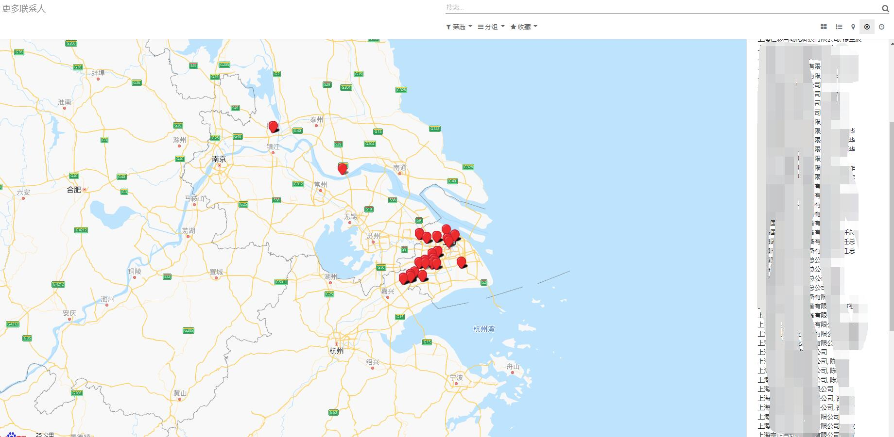
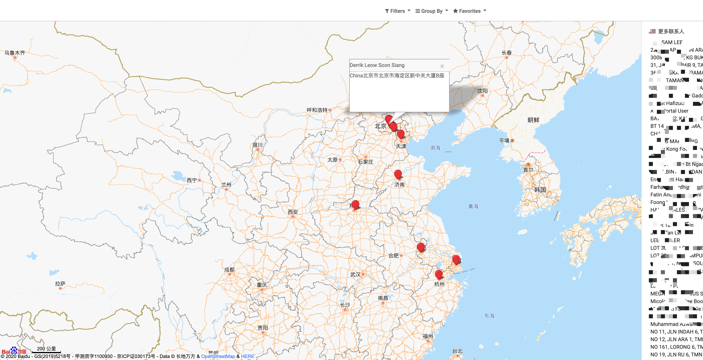

百度地图
百度地图视图。模块的起因是，有客户希望能在地图上展示出所有的客户的坐标，能够一眼看清某个客户附近的客户。企业版自带了一个地图模块，不过老外嘛，自然是使用Google Map了，由于复杂的网络原因，我们并不能直接使用，体验并不好，因此才有了今天的这个模块。
模块介绍
首先，我们要使用百度地图，就需要去百度地图的开放平台去注册一个账号，获取AK，填入到我们的模块参数中：

填完AK，其余的参数可以保持不动。 接下来，我们创建一个客户，并填入客户的详细地址：

该模块会在我们保存客户地址时，自动将客户地址逆解析为百度地图的坐标，并存在数据库中，并且会在地址栏的下方显示一个客户的缩小版的地图，可以拖拽，也可以缩放。
最后，我们可以在联系人模块中，看到在原有的视图类型中多出了一个百度地图类型的视图，我们点击它将能够在一张地图上看到所有的客户。

点击地图上的某个标记，可以看到与之对应的客户信息。
